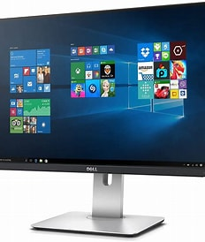

monitor was first made by a sientiest named [karl ferdinand braun] and he was from germany and monitor was first made in the year 1897 monitor is like a televisions screen but its more smaller and moderned,instead of wires and electricity it has a cable private to the case... every monitor are roughly 2m tiny dots the monitors job is to tell every single one of those dots whar color to be your monitor mixes rgb your monitor doesnt actually have every color it only has THREE red,green,blue
right now im going to talk about the types of monitors
| CRT |
|---|
| LCD |
| LED |
| OLED |
| TN |
| IPS |
| VA |